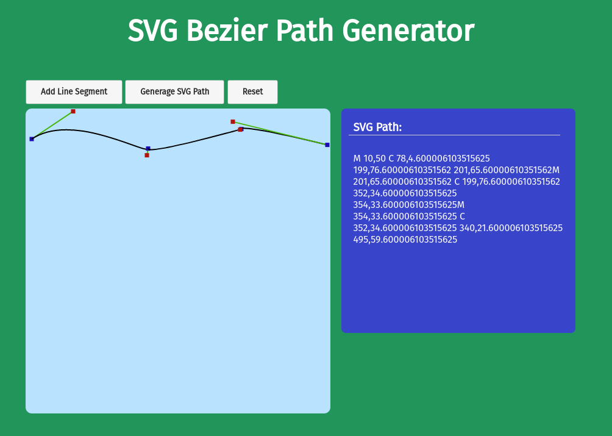

SVG Generator

This is a simple one day project that is intended to simplify my life. I was intending to use the SVG element to create some interesting wave like patterns as part of a website background for a different project. I was unable to find a simple online tool that would allow you to create a somewhat complex set of bezier curves.
So I decided to throw together a fairly simplistic Bezier Curve path generator using Vanilla JS and the Canvas element.
The result is a tool that you can use to visually create svg paths and export to the nessisary path commands for the SVG element. I could likely have just used GIMP or Inkscape, but this was more fun.
View Live Version
There are a few limitations on this tool that I may try to address down the road:
- It only supports stroke, and not nessisarily fill.
- It is not a fully responive site.